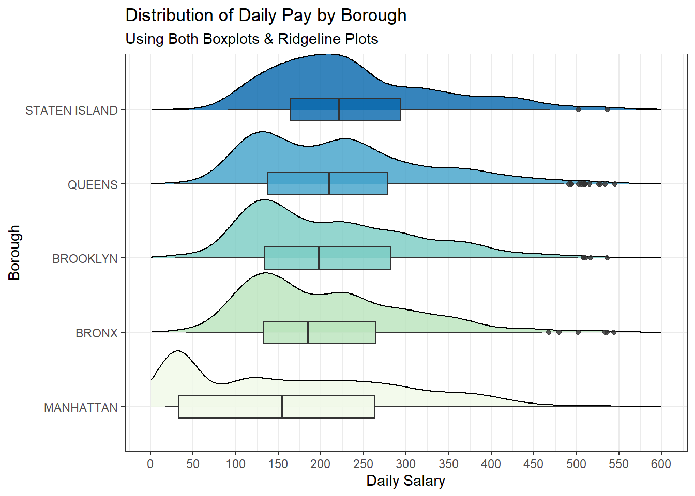
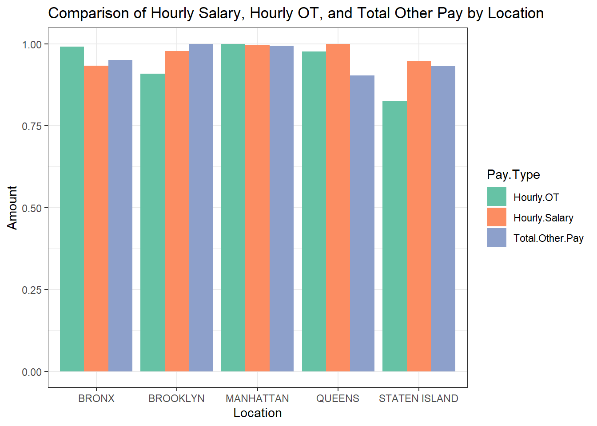
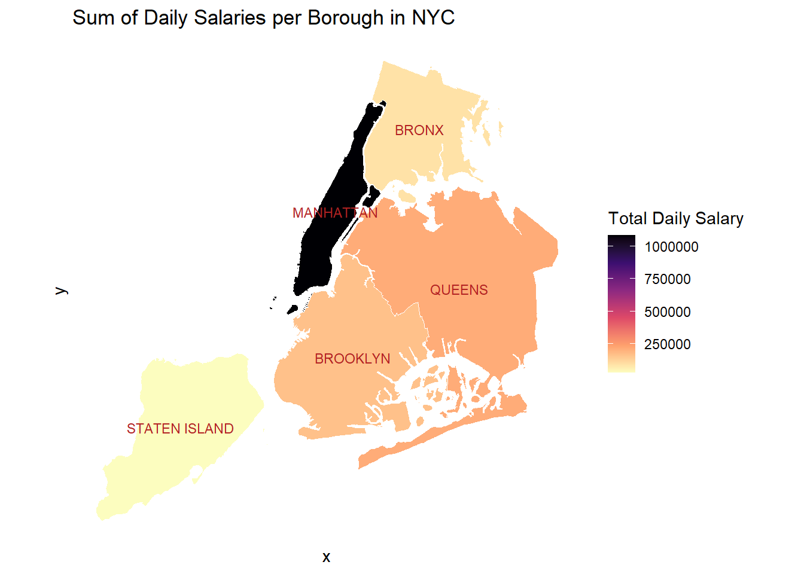
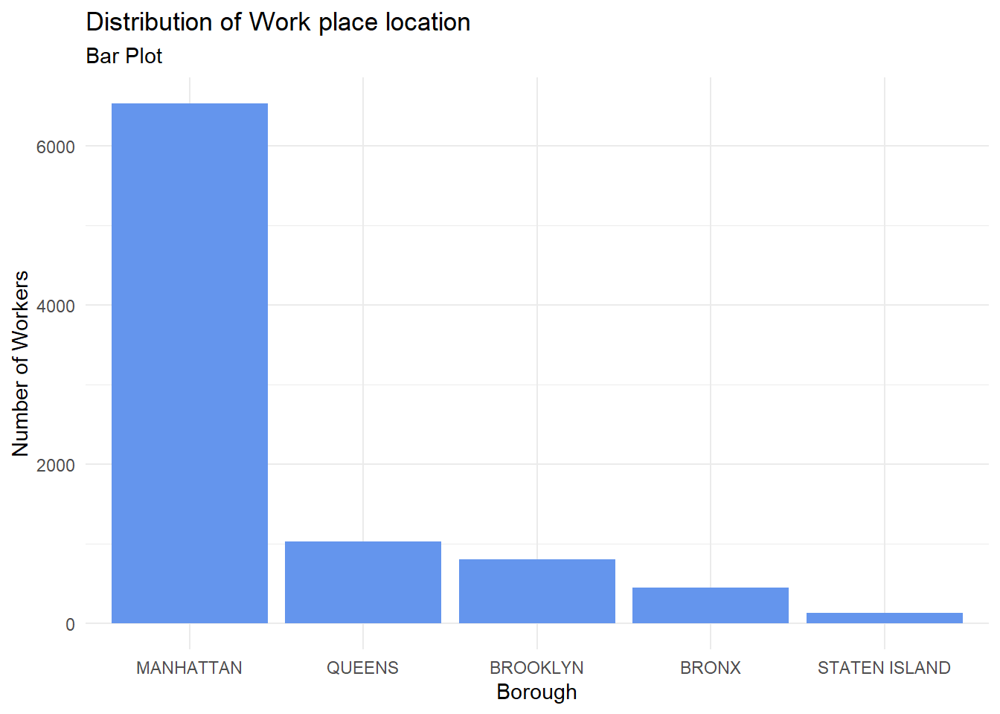
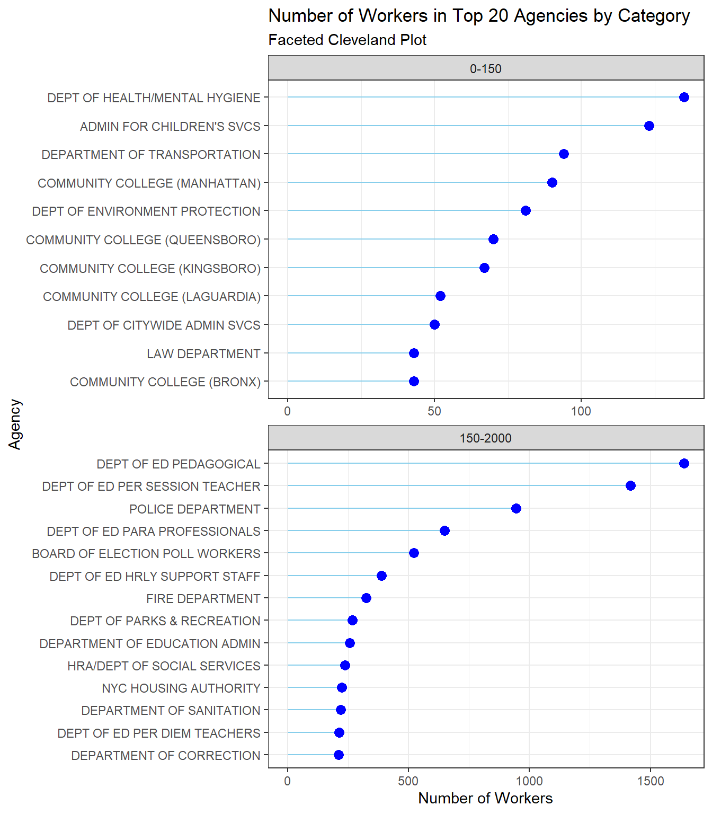
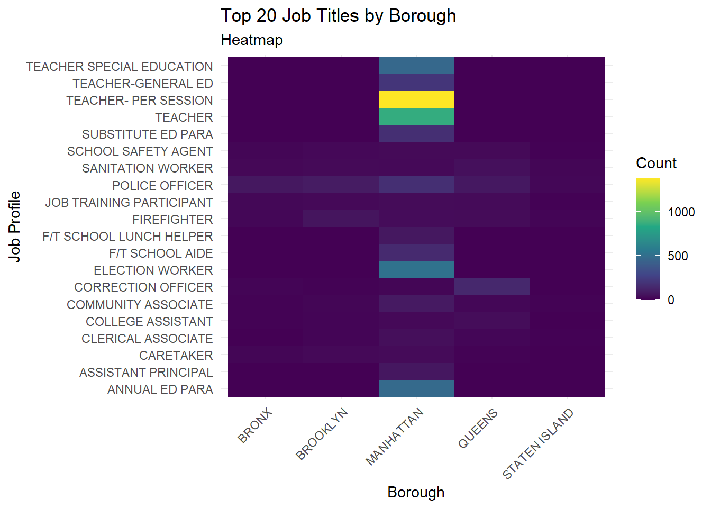
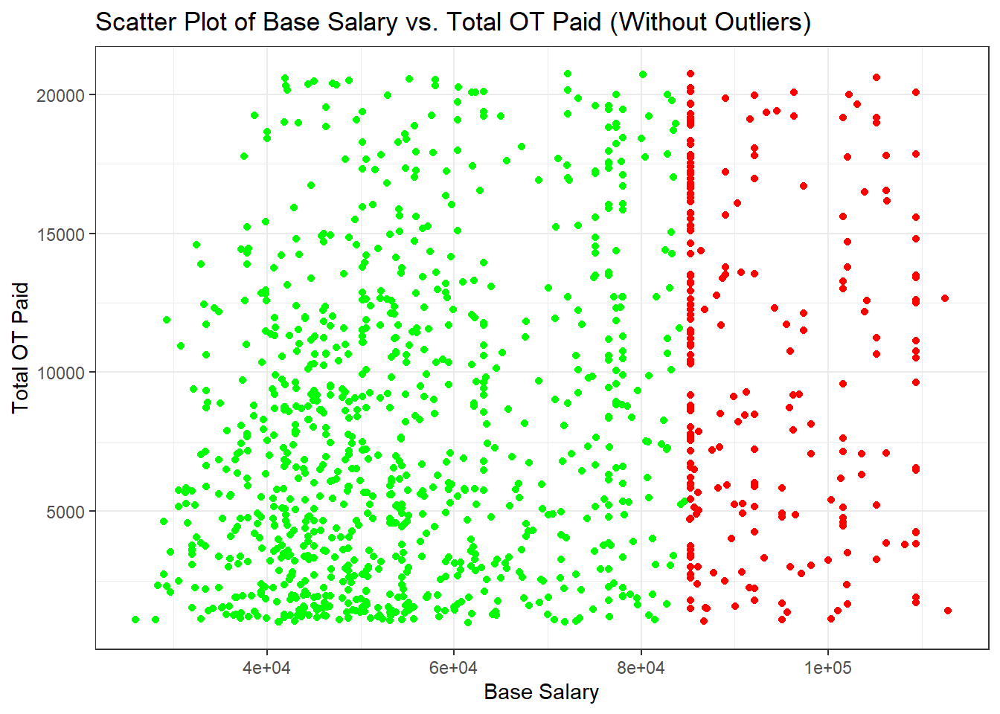
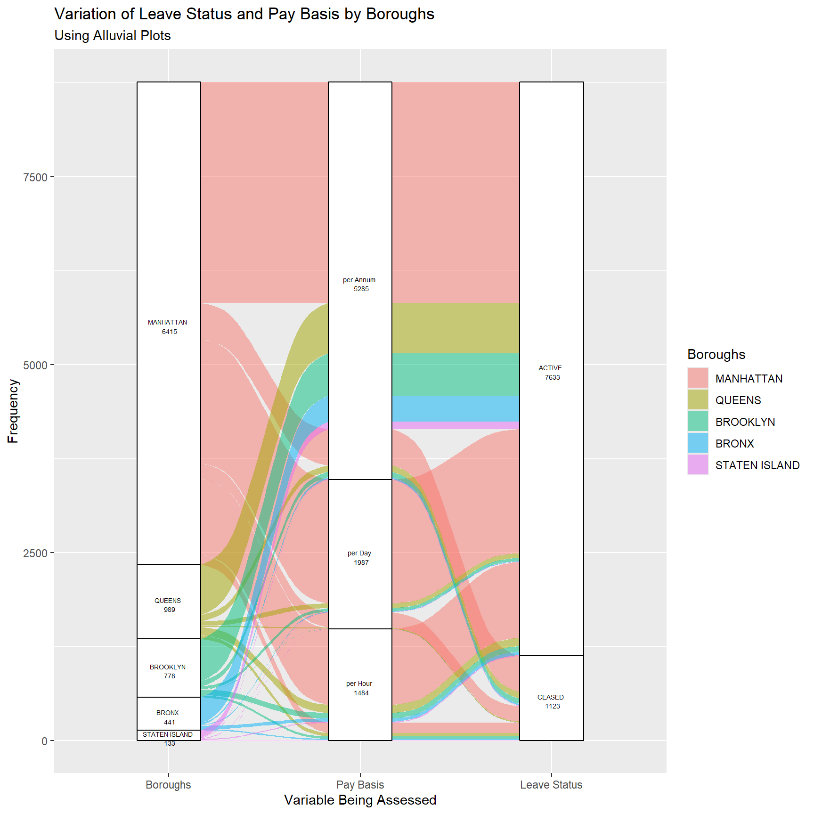

Code
library(redav)
library(ggplot2)
library(ggridges)
library(GGally)
library(dplyr)
library(plotly)
library(ggalluvial)
library(tidyverse)
library(tidyr)
library(RColorBrewer)
library(forcats)
library(viridis)
library(readr)
library(sf)Here we analyze the data and present our inferences.
library(redav)
library(ggplot2)
library(ggridges)
library(GGally)
library(dplyr)
library(plotly)
library(ggalluvial)
library(tidyverse)
library(tidyr)
library(RColorBrewer)
library(forcats)
library(viridis)
library(readr)
library(sf)clean_nyc_payroll <- read.csv("./Data/cleaned_nyc_payroll.csv")payroll_no_outliers <- clean_nyc_payroll %>%
filter(between(
Daily.Salary,
quantile(Daily.Salary, 0.25) - 1.5 * IQR(Daily.Salary),
quantile(Daily.Salary, 0.75) + 1.5 * IQR(Daily.Salary)
))
write.csv(payroll_no_outliers, "./Data/d3_data.csv", row.names = FALSE)
medians <- payroll_no_outliers %>%
group_by(Work.Location.Borough) %>%
summarize(MedianSalary = median(Daily.Salary))
payroll_no_outliers <-
left_join(payroll_no_outliers, medians, by = "Work.Location.Borough")
ggplot(data = payroll_no_outliers, alpha = 0.1) +
geom_density_ridges(
mapping = aes(
x = Daily.Salary,
y = reorder(Work.Location.Borough, MedianSalary),
fill = reorder(Work.Location.Borough, MedianSalary),
scale = 0.8
),
show.legend = FALSE,
alpha = 0.81
) +
geom_boxplot(
mapping = aes(
x = Daily.Salary,
y = reorder(Work.Location.Borough, MedianSalary),
fill = reorder(Work.Location.Borough, MedianSalary)
),
show.legend = FALSE,
alpha = 0.81,
lwd = 0.36,
width = 0.3
) +
labs(
title = "Distribution of Daily Pay by Borough",
subtitle = "Using Both Boxplots & Ridgeline Plots",
x = "Daily Salary",
y = "Borough"
) +
scale_x_continuous(breaks = seq(0, 600, by = 50),
limits = c(0, 600)) +
theme_bw() +
scale_fill_brewer(palette = "GnBu")
If we do a Borough wise Analysis, we see the following:
The boxplot for Manhattan indicates that the median daily salary is the lowest among all the boroughs, as shown by the line within the box being the furthest to the left.
The ridgeline plot for Manhattan is fairly broad, indicating a wider distribution of salaries with a long tail towards the higher end, which suggests that while the median salary is low, there are still a significant number of employees earning more.
We also see that Manhattan has the highest number of low-paid employees. In fact, the mode of Manhattan’s Daily salary is the lowest.
The distribution of salaries in the Bronx and Brooklyn is more concentrated around the median, with a steep drop-off on either side of the peak in the ridgeline plot.
The salary distribution of Staten Island has a more gradual slope on both sides of the peak, indicating a less concentrated spread of daily salaries than in Brooklyn or Bronx.
Queens has the highest median daily salary of all the boroughs presented in the graph. The distribution of salaries in Queens, as depicted by the ridgeline plot, is quite broad, suggesting a more even spread of salaries across its range.
We also gain a significant amount of information by studying the modality of the data. The unimodal distributions in Staten Island and the Bronx suggest that many jobs may fall into a common pay range, which can be a positive sign for pay equity. However, it could also indicate a lack of higher-paying opportunities in these boroughs. The bimodal distribution in Manhattan, Queens and Brooklyn could reflect wage disparities, where there is a significant gap between lower-paid and higher-paid employees. This might require policy attention to ensure equitable pay across different job functions and sectors.Queens has a significant second peak, pointing to economic diversity within the borough, suggesting a mix of industries and sectors that offer a range of salary levels.
Across all boroughs, these implications suggest the need for tailored economic and workforce development policies that consider the unique salary distributions and economic landscapes of each borough.
payroll_breakdown <- clean_nyc_payroll %>%
# 1. CLEAN: Remove '$' and ',' and convert to numeric so math works
mutate(
Total.OT.Paid = as.numeric(gsub("[$,]", "", Total.OT.Paid)),
OT.Hours = as.numeric(gsub("[$,]", "", OT.Hours)),
Total.Other.Pay = as.numeric(gsub("[$,]", "", Total.Other.Pay))
) %>%
# 2. FILTER: Now we can safely filter for values > 0
filter(Total.Other.Pay > 0, Total.OT.Paid > 0, OT.Hours > 0) %>%
# 3. CALCULATE: Create the new hourly columns
mutate(
Hourly.Salary = Daily.Salary / 24,
Hourly.OT = Total.OT.Paid / OT.Hours
) %>%
# 4. OUTLIER FILTER: Added 'na.rm = TRUE' to prevent errors if NAs exist
filter(
between(
Total.Other.Pay,
quantile(Total.Other.Pay, 0.25, na.rm = TRUE) - 1.5 * IQR(Total.Other.Pay, na.rm = TRUE),
quantile(Total.Other.Pay, 0.75, na.rm = TRUE) + 1.5 * IQR(Total.Other.Pay, na.rm = TRUE)
),
between(
Hourly.Salary,
quantile(Hourly.Salary, 0.25, na.rm = TRUE) - 1.5 * IQR(Hourly.Salary, na.rm = TRUE),
quantile(Hourly.Salary, 0.75, na.rm = TRUE) + 1.5 * IQR(Hourly.Salary, na.rm = TRUE)
),
between(
Hourly.OT,
quantile(Hourly.OT, 0.25, na.rm = TRUE) - 1.5 * IQR(Hourly.OT, na.rm = TRUE),
quantile(Hourly.OT, 0.75, na.rm = TRUE) + 1.5 * IQR(Hourly.OT, na.rm = TRUE)
)
) %>%
# 5. NORMALIZE: Added 'na.rm = TRUE' here as well just to be safe
mutate(
Hourly.Salary = (Hourly.Salary - min(Hourly.Salary, na.rm = TRUE)) / (max(Hourly.Salary, na.rm = TRUE) - min(Hourly.Salary, na.rm = TRUE)),
Hourly.OT = (Hourly.OT - min(Hourly.OT, na.rm = TRUE)) / (max(Hourly.OT, na.rm = TRUE) - min(Hourly.OT, na.rm = TRUE)),
Total.Other.Pay = (Total.Other.Pay - min(Total.Other.Pay, na.rm = TRUE)) / (max(Total.Other.Pay, na.rm = TRUE) - min(Total.Other.Pay, na.rm = TRUE))
)
payroll_long <- payroll_breakdown %>%
pivot_longer(
cols = c(Hourly.Salary, Hourly.OT, Total.Other.Pay),
names_to = "Pay.Type",
values_to = "Amount"
)
ggplot(payroll_long,
aes(x = Work.Location.Borough, y = Amount, fill = Pay.Type)) +
geom_bar(position = "dodge", stat = "identity") +
labs(title = "Comparison of Hourly Salary, Hourly OT, and Total Other Pay by Location",
x = "Location",
y = "Amount") +
scale_fill_brewer(palette = "Set2") +
theme_bw()
The hourly salary seems to be quite consistent across boroughs. OT pay is similarly distributed across all the boroughs barring Staten Island. This could also be a result of lesser people working overtime in Staten Island, as the pay for OT is generally decided by policies fixed for the entire city. There is a noticeable difference in the ‘Total Other Pay’ across boroughs, with Manhattan and Brooklyn having higher amounts compared to the Bronx, Brooklyn, and Staten Island. There is a noticeable difference in the ‘Total Other Pay’ across boroughs, with Manhattan and Staten Island having higher amounts compared to the Bronx, Brooklyn, and Queens.
Note that the data is normalized, and the comparison across boroughs reflects relative proportions rather than absolute values. This normalization allows for a fair assessment of the pay structure proportionally, rather than being skewed by a borough with a larger workforce or higher pay scales.
The consistency in hourly salary and OT across boroughs suggests that New York City may have standardized pay rates and overtime policies for hourly workers, promoting equity across different regions. The variation in ‘Total Other Pay’ may necessitate a closer look by policymakers to ensure that compensations are fair and justified by the differences in living costs or work conditions across boroughs. Understanding the composition of ‘Total Other Pay’ is crucial for City Council and policymakers. If it includes bonuses or cost of living adjustments, it might be essential to evaluate their distribution and ensure they meet the employees’ needs in different boroughs.
d3_data <- read.csv("./Data/d3_data.csv")
geojson_data <- st_read("./Data/new-york-city-boroughs.geojson")Reading layer `new-york-city-boroughs' from data source
`C:\Users\ayon-\Downloads\NYCPayroll-main (1)\NYCPayroll-main\Data\new-york-city-boroughs.geojson'
using driver `GeoJSON'
Simple feature collection with 5 features and 4 fields
Geometry type: MULTIPOLYGON
Dimension: XY
Bounding box: xmin: -74.25559 ymin: 40.49612 xmax: -73.70001 ymax: 40.91553
Geodetic CRS: WGS 84geojson_data$name <- toupper(geojson_data$name)
payroll_data_processed <- d3_data %>%
group_by(Work.Location.Borough) %>%
summarise(Total.Daily.Salary = sum(Daily.Salary, na.rm = TRUE)) %>%
ungroup()
geojson_data_processed <- geojson_data %>%
left_join(payroll_data_processed, by = c("name" = "Work.Location.Borough"))
boroughs_sf <- st_as_sf(geojson_data_processed)
boroughs_sf <- boroughs_sf %>%
st_make_valid()
boroughs_centroids <- boroughs_sf %>%
filter(st_is_valid(.)) %>%
st_centroid()
# Plot the data focusing on New York City
ggplot(data = boroughs_sf) +
geom_sf(aes(fill = Total.Daily.Salary),
color = "white",
size = 0.2) +
geom_sf_text(
data = boroughs_centroids,
aes(label = name),
check_overlap = TRUE,
size = 3,
colour = "firebrick"
) +
scale_fill_viridis_c(option = "magma", direction = -1) + # Use a color scale that is colorblind-friendly
theme_minimal() +
labs(fill = "Total Daily Salary", title = "Sum of Daily Salaries per Borough in NYC") +
coord_sf(datum = NA)
The total daily salary in a borough can be used to study and understand how the budget should be allocated in the city of New York. We see that Manhattan is clearly the highest on the upper end of the scale, while other boroughs are on the lower end of the scale. This is after we have removed anomalies from the data, which actually goes on to show how much money is spent on salaries in Manhattan. Despite removing outliers, Manhattan and other boroughs are on the extremities of the color scale, indicating the huge difference in salaries.
Staten Island spends the least amount on daily salaries, and this should be accounted for while budgeting. This could also be a result of lesser number of jobs and workers in Staten Island, stemming from a smaller population. Queens has the second highest amount of money spent on salaries.
While making policies, these factors should be considered. We know that NYC is the financial capital of the world, but we see that the highest contribution to this, is from the borough of Manhattan. Manhattan is also the most densely populated borough, which shows the highest number of workers and hence the highest amount of money spent on daily salaries.
clean_nyc_payroll$Work.Location.Borough <-
factor(clean_nyc_payroll$Work.Location.Borough)
ggplot(clean_nyc_payroll, aes(x = fct_infreq(Work.Location.Borough))) +
geom_bar(fill = "cornflowerblue") +
theme_minimal() +
labs(
title = "Distribution of Work place location",
subtitle = "Bar Plot",
x = "Borough",
y = "Number of Workers"
)
The bar chart presents a graphical representation of New York City’s worker distribution, with a clear skew towards Manhattan. This suggests Manhattan’s role as the economic powerhouse of the city. This concentration of workers in Manhattan can be attributed to several factors, such as its status as the epicenter of the global financial industry, housing the headquarters of numerous Fortune 500 companies, and boasting a well-established commercial infrastructure.
However, the substantial drop in the number of workers in the other boroughs raises concerns about economic diversity and employment opportunities outside of Manhattan. This uneven distribution may result in a lack of job accessibility for residents living in the outer boroughs, which could translate into longer commutes, reduced quality of life, and increased traffic congestion. Moreover, it might exacerbate income inequality and limit upward mobility for those unable to secure employment in the city’s economic hub. Such trends are already visible in NYC and it is a well known fact that Manhattan has the best quality of life in the city, although very expensive.
# Assuming clean_nyc_payroll is your dataset
agency_counts <- clean_nyc_payroll %>%
count(Agency.Name) %>%
arrange(desc(n))
# Select the top 20 agencies
top_agencies <- head(agency_counts, 25)
# Create a category variable based on the count
top_agencies$category <- cut(
top_agencies$n,
breaks = c(0, 150, Inf),
labels = c("0-150", "150-2000"),
include.lowest = TRUE
)
# Create the plot
ggplot(top_agencies, aes(x = reorder(Agency.Name, n), y = n)) +
geom_segment(aes(xend = Agency.Name, yend = 0), color = "skyblue") +
geom_point(color = "blue", size = 3) +
facet_wrap( ~ category, scales = "free", ncol = 1) +
coord_flip() +
labs(
title = "Number of Workers in Top 20 Agencies by Category",
subtitle = "Faceted Cleveland Plot",
y = "Number of Workers",
x = "Agency"
) +
theme_bw()
Using the Cleveland plot we have distinctly categorized the workforce across NYC’s leading agencies showing a strategic allocation of resources, with a notable focus on education and public safety. This distribution highlights the city’s emphasis on education and public safety, potentially at the expense of other services. However, the significant disparity in employee numbers between these agencies and others, such as community colleges and and citywide administration, leads to questions about policy decisions impacting city employment. Are the city’s financial resources being channeled appropriately to meet the diverse needs of its population, or is there room for reallocation to address other critical services and maintain a balanced city ecosystem?
These disparities in workforce distribution should be taken into consideration while framing policies surrounding city employment and budget allocation. By addressing these questions, New York City can make informed, data-driven decisions to optimize its workforce deployment, ensuring that it adequately serves all residents and maintains a harmonious balance between essential services. Such considerations are essential for the city’s continued growth and the well-being of its communities.
title_counts <- clean_nyc_payroll %>%
count(Title.Description, Work.Location.Borough)
top_titles <- title_counts %>%
group_by(Title.Description) %>%
summarise(Total = sum(n)) %>%
top_n(20, Total) %>%
pull(Title.Description)
filtered_title_counts <- title_counts %>%
filter(Title.Description %in% top_titles)
wide_data <- filtered_title_counts %>%
pivot_wider(
names_from = Work.Location.Borough,
values_from = n,
values_fill = list(n = 0)
)
long_data <- wide_data %>%
pivot_longer(
cols = -Title.Description,
names_to = "Borough",
values_to = "Count"
)
ggplot(long_data, aes(x = Borough, y = Title.Description, fill = Count)) +
geom_tile() +
scale_fill_viridis_c() +
theme_minimal() +
theme(axis.text.x = element_text(angle = 45, hjust = 1)) +
labs(
title = "Top 20 Job Titles by Borough",
subtitle = "Heatmap",
x = "Borough",
y = "Job Profile"
)
This heatmap provides a visual representation of the distribution of the top 20 job titles among New York City’s municipal workers across its five boroughs: Bronx, Brooklyn, Manhattan, Queens, and Staten Island. Some job titles appear to be common across multiple boroughs, indicated by a consistent color across the row. For example, Police Officers and Fire-Fighters are uniformly distributed across several boroughs. This could suggest that safety and essential services related positions are widely needed and filled across NYC. On the other hand, certain job titles have a pronounced presence in specific boroughs, portrayed by a distinct color block, indicating unique needs or administrative focuses of that borough. We see that teachers are highly concentrated in Manhattan, and their presence in other boroughs is significantly lesser. This could be explained by the fact that Manhattan is most densely populated, and will have more students, resulting in a large number of teachers. The need of the borough has brought about job opportunities of a certain type.
Another interesting fact which is noticed is that the Top 20 job titles by borough are quite diverse, and encapsulate different parts of society, with a focus on education. This is reflective of NYC’s policy priorities and its commitment to education at various levels, from special education to general education. Moreover, there is a need not onlyfor general education teachers but also for specialized roles such as “Teacher Special Education” and “Annual Ed Para,” which suggests that NYC values a diverse educational workforce capable of meeting a wide range of student needs.
# Calculate total years of experience
clean_nyc_payroll$Total.Years.of.Experience <-
clean_nyc_payroll$Fiscal.Year - as.numeric(format(
as.Date(clean_nyc_payroll$Agency.Start.Date, "%m/%d/%Y"),
"%Y"
))
clean_nyc_payroll$Work.Location.Borough <-
as.factor(clean_nyc_payroll$Work.Location.Borough)
# Filter data
clean_nyc_payroll$Total.OT.Paid <- as.numeric(gsub("[$,]", "", clean_nyc_payroll$Total.OT.Paid))
filtered_data <- clean_nyc_payroll %>%
filter(OT.Hours < 1500, Total.OT.Paid > 0, Daily.Salary < 1000)
p <- ggparcoord(
filtered_data,
columns = c(19, 18, 15:16),
groupColumn = "Work.Location.Borough",
alphaLines = 0.5,
showPoints = TRUE
) +
theme_minimal() +
labs(
title = "Overtime compensation compared to Daily Salary and Work Experience",
subtitle = "Interactive Parallel Plot ",
x = "Variables",
y = "Scaled Values"
)
plotly_plot <- ggplotly(p)
plotly_plotThis plot illustrates the relationships between the total years of work experience, daily salary, overtime (OT) hours worked, and the total amount of overtime paid to municipal workers in different boroughs of New York City. It appears that there isn’t a strong, consistent relationship between years of experience and daily salary across all boroughs. This is indicated by the crisscrossing lines between these two variables. In some cases, more experience correlates with a higher daily salary, but this isn’t uniform across the dataset. The variation in daily salary across similar years of experience may point to differing pay scales based on job title, level of education, or other factors not depicted in the graph. This reflects the complexity of compensation policies within a large municipal workforce.
There seems to be a more direct relationship between OT hours and total OT paid, as one would expect. The lines between these two variables are more consistently increasing, which suggests that workers who put in more OT hours also receive higher total OT compensation. From a policy perspective, the graph suggests that NYC’s overtime policies are likely standardized, given the consistent relationship between OT hours and OT pay. Workers are compensated for overtime regardless of their borough, which would be in line with labor laws and regulations.
The relationship between daily salary and OT hours isn’t as clear-cut. Some workers with lower daily salaries appear to work more OT hours, while others with higher salaries work fewer OT hours, implying a negative correlation. This could imply that OT is not solely influenced by the salary but perhaps by the demands of the job or the availability of workers to cover shifts. It could also mean that workers who are well paid, do not feel the need to work overtime to live a sustainable life. However, the municipal employees who earn smaller figures, need to work a lot more to survive in a city as expensive as New York. It could also be the case that those with more OT hours might be in departments with greater workload demands or insufficient staffing, prompting a need for more overtime.
The colors representing different boroughs show that there is some variation in how experience, daily salary, OT hours, and OT pay interact across different parts of the city. We can see that higher salaries are generally associated with Manhattan. However, some of the lowest salaries are also associated with Manhattan showing a wide spread of roles and salaries.
A worrying factor is that some data points show the highest OT hours, but do not indicate matching OT pay. This could be indicative of potential for overtime abuse. Such issues should be monitored more closely. In terms of overall workforce policy, if NYC’s compensation for overtime is consistent across boroughs and tied clearly to hours worked, it suggests a policy that fairly compensates additional work hours. However, if the data shows discrepancies that cannot be explained by job role or seniority, it could indicate areas where policy might need to be reviewed to ensure equity and prevent excessive overtime accumulation.
# Assuming clean_nyc_payroll is your dataset
# Define a threshold for outliers (e.g., 1.5 standard deviations from the mean)
salary_sd <- 1.5 * sd(clean_nyc_payroll$Base.Salary, na.rm = TRUE)
ot_sd <- 1.5 * sd(clean_nyc_payroll$Total.OT.Paid, na.rm = TRUE)
salary_mean <- mean(clean_nyc_payroll$Base.Salary, na.rm = TRUE)
ot_mean <- mean(clean_nyc_payroll$Total.OT.Paid, na.rm = TRUE)
min_salary_threshold <- 10000
min_ot_paid <- 1000
nyc_payroll_filtered <-
clean_nyc_payroll[abs(clean_nyc_payroll$Base.Salary - salary_mean) < salary_sd &
abs(clean_nyc_payroll$Total.OT.Paid - ot_mean) < ot_sd &
clean_nyc_payroll$Base.Salary > min_salary_threshold &
clean_nyc_payroll$Total.OT.Paid > min_ot_paid, ]
# Create a new variable for color based on Base Salary being below or above $70,000
nyc_payroll_filtered$Salary.Color <-
ifelse(nyc_payroll_filtered$Base.Salary < 85000, "green", "red")
# Create the scatter plot with filtered data and colored points
ggplot(nyc_payroll_filtered,
aes(x = Base.Salary, y = Total.OT.Paid, color = Salary.Color)) +
geom_point() +
labs(title = "Scatter Plot of Base Salary vs. Total OT Paid (Without Outliers)",
x = "Base Salary",
y = "Total OT Paid") +
scale_color_identity() + # Use the actual colors specified in Salary.Color
theme_bw()
We see that the daily salary range extends from around $30,000 to just over $100,000, which likely reflects the broad range of job titles and responsibilities within the municipal workforce. The total OT paid also shows a wide range, from near $0 to over $15,000, indicating that overtime compensation varies greatly among employees.
There doesn’t appear to be a strong linear correlation between daily salary and total OT paid. However, the low to mid daily salaries (green dots) have a much higher density a compared to the higher salaries (red dots). For the cluster with lower base salaries (green dots), the total OT paid varies significantly. This suggests that employees with lower base salaries may rely on OT for a significant addition to their income, and the opportunity to work OT might be more variable or widespread in roles with lower base salaries. The cluster with higher base salaries (red dots) also shows a wide variation in OT pay, including some points with very high OT compensation. This could indicate that certain positions with higher base salaries also have the potential for substantial overtime work, which may be due to specialized skills, emergency response roles, or managerial responsibilities that require extended hours.
The lack of a clear upward or downward trend suggests that overtime pay is not necessarily a function of base salary. Policies regarding overtime may be influenced by operational needs rather than compensation levels. The data could be used to assess whether current policies ensure fair compensation for overtime across all salary levels. Moreover, Since the outliers have been removed, the data appears to be within expected ranges, indicating that the overtime pay is likely within the guidelines and policies set by the city.
There is also a concentration of dots (both green and red) around certain base salary levels, such as around $50,000 and $90,000. This could indicate standard salary levels for specific roles within the municipal workforce.
In conclusion, the scatter plot suggests that in NYC, both lower and higher base salary employees have the potential to earn varying amounts of overtime pay. This implies a diverse range of job roles and responsibilities that may necessitate irregular working hours, reflecting the complexity and demands of working within the city’s municipal structure.
table(clean_nyc_payroll$Leave.Status.as.of.June.30)
ACTIVE CEASED ON LEAVE ON SEPARATION LEAVE
7633 1123 92 19
SEASONAL
96 We see that most of the leave statuses apart from “ACTIVE” and “CEASED” are negligible and will not contribute to the overall information gained. Hence, we consider only these 2 values and proceed to the next graph for analysis.
alluvial_data <-
clean_nyc_payroll |> filter(Leave.Status.as.of.June.30 %in% c("ACTIVE", "CEASED")) |>
count(Work.Location.Borough, Pay.Basis, Leave.Status.as.of.June.30) |>
rename(
axis1 = Work.Location.Borough,
axis2 = Pay.Basis,
axis3 = Leave.Status.as.of.June.30,
Freq = n
)
ordered_levels <- alluvial_data %>%
group_by(axis1) %>%
summarize(total_count = sum(Freq)) %>%
arrange(total_count) %>%
pull(axis1)
alluvial_data$axis1 <-
factor(alluvial_data$axis1, levels = rev(ordered_levels))
ggplot(alluvial_data,
aes(
axis1 = axis1,
axis2 = axis2,
axis3 = axis3,
y = Freq
)) +
geom_alluvium(aes(fill = axis1)) +
geom_stratum() +
geom_text(stat = "stratum",
aes(label = paste(
after_stat(stratum), "\n", after_stat(count)
)),
size = 1.8,
vjust = 0.7) +
scale_x_discrete(limits = c("Boroughs", "Pay Basis", "Leave Status")) +
labs(
title = "Variation of Leave Status and Pay Basis by Boroughs",
subtitle = "Using Alluvial Plots",
x = "Variable Being Assessed",
y = "Frequency",
fill = "Boroughs"
)
From the plot we see that Manhattan has the highest frequency, followed by Queens, Brooklyn, Bronx, and Staten Island, indicating that Manhattan has the highest number of employees under consideration for the dataset. The majority of employees across all boroughs are on an annual pay basis, followed by those paid per day, and then per hour. This suggests that full-time, salaried positions are more common than part-time or hourly positions in these boroughs. A significant number of employees, regardless of pay basis, are active, which is reflected by the thick lines flowing into the ‘ACTIVE’ category. However, there is also a notable portion that has ‘CEASED’ employment, as indicated by the lines flowing into this category. A higher number of ceased statuses may suggest issues with employee retention, job satisfaction, or other systemic problems that HR might need to address.
Some noticable trends have been described below:
The most common pay basis across all boroughs is “per annum”, suggesting a large proportion of the workforce is employed on a full-time, salaried basis. This implies stable employment conditions and potentially more consistent work hours and benefits.x`
Employees from Manhattan have a larger representation in the per annum pay basis, indicating a higher number of full-time positions.
There is a substantial flow from the per annum and per day pay basis to the active status, suggesting that full-time and daily-wage employees currently retain their positions.
The per hour pay basis has a relatively balanced distribution between active and ceased statuses, possibly reflecting the transient nature of hourly employment.
The active status dominates across all boroughs, indicating that the majority of employees are currently engaged in their jobs. This is a positive sign of a stable workforce.
City Council can use this data to understand workforce distribution and manage resources accordingly. Knowing that Manhattan has the highest number of employees can help in regional City Council planning. The predominance of annual pay basis can influence benefits, leave policies, and job security measures that City Council develops. Moreover, the transition from pay basis to leave status can help City Council investigate the retention rates among different employment types and address any concerns in specific categories. City Council can also use the distribution of pay basis to create competitive compensation strategies to attract and retain talent, especially in boroughs with a lower frequency of employees. Finally, the data on ceased employment can aid in risk assessments and in identifying patterns that may indicate systemic issues within certain boroughs or pay categories.